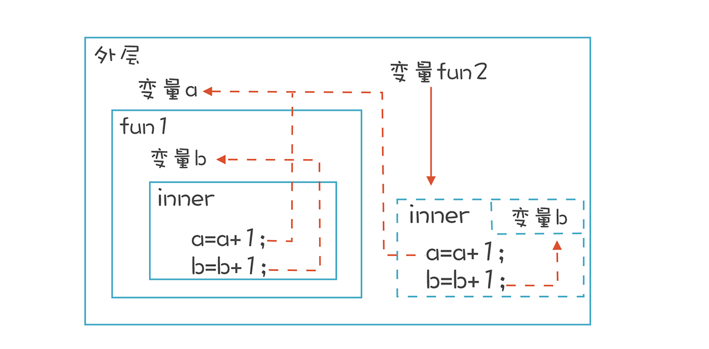
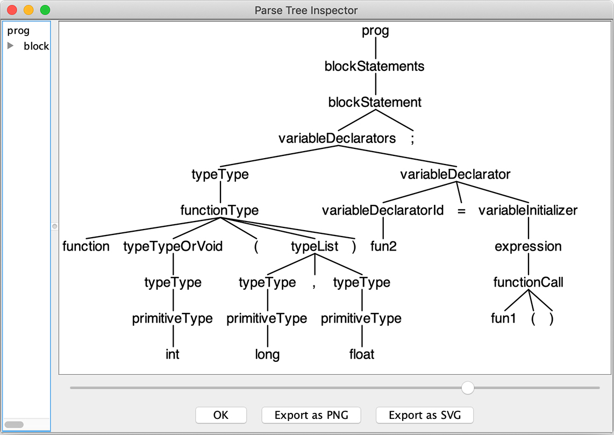
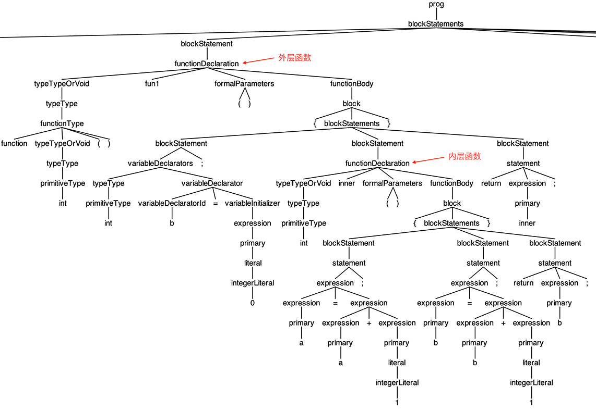
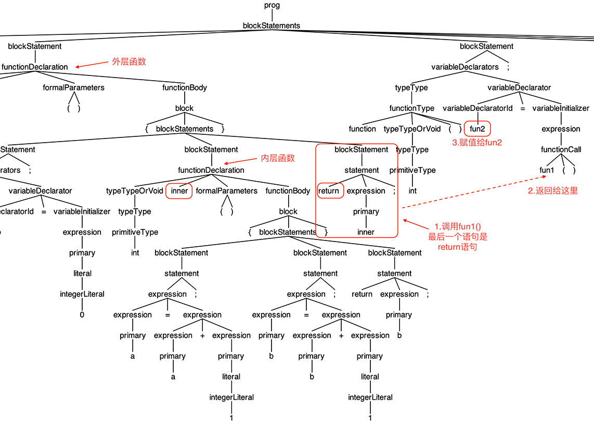

- 00 开篇词 为什么你要学习编译原理？.md
- 01 理解代码：编译器的前端技术.md
- 02 正则文法和有限自动机：纯手工打造词法分析器.md
- 03 语法分析（一）：纯手工打造公式计算器.md
- 04 语法分析（二）：解决二元表达式中的难点.md
- 05 语法分析（三）：实现一门简单的脚本语言.md
- 06 编译器前端工具（一）：用Antlr生成词法、语法分析器.md
- 07 编译器前端工具（二）：用Antlr重构脚本语言.md
- 08 作用域和生存期：实现块作用域和函数.md
- 09 面向对象：实现数据和方法的封装.md
- 10 闭包： 理解了原理，它就不反直觉了.md
- 11 语义分析（上）：如何建立一个完善的类型系统？.md
- 12 语义分析（下）：如何做上下文相关情况的处理？.md
- 13 继承和多态：面向对象运行期的动态特性.md
- 14 前端技术应用（一）：如何透明地支持数据库分库分表？.md
- 15 前端技术应用（二）：如何设计一个报表工具？.md
- 16 NFA和DFA：如何自己实现一个正则表达式工具？.md
- 17 First和Follow集合：用LL算法推演一个实例.md
- 18 移进和规约：用LR算法推演一个实例.md
- 19 案例总结与热点问题答疑：对于左递归的语法，为什么我的推导不是左递归的？.md
- 20 高效运行：编译器的后端技术.md
- 21 运行时机制：突破现象看本质，透过语法看运行时.md
- 22 生成汇编代码（一）：汇编语言其实不难学.md
- 23 生成汇编代码（二）：把脚本编译成可执行文件.md
- 24 中间代码：兼容不同的语言和硬件.md
- 25 后端技术的重用：LLVM不仅仅让你高效.md
- 26 生成IR：实现静态编译的语言.md
- 27 代码优化：为什么你的代码比他的更高效？.md
- 28 数据流分析：你写的程序，它更懂.md
- 29 目标代码的生成和优化（一）：如何适应各种硬件架构？.md
- 30 目标代码的生成和优化（二）：如何适应各种硬件架构？.md
- 31 内存计算：对海量数据做计算，到底可以有多快？.md
- 32 字节码生成：为什么Spring技术很强大？.md
- 33 垃圾收集：能否不停下整个世界？.md
- 34 运行时优化：即时编译的原理和作用.md
- 35 案例总结与热点问题答疑：后端部分真的比前端部分难吗？.md
- 36 当前技术的发展趋势以及其对编译技术的影响.md
- 37 云编程：云计算会如何改变编程模式？.md
- 38 元编程：一边写程序，一边写语言.md
- 加餐 汇编代码编程与栈帧管理.md
- 用户故事 因为热爱，所以坚持.md
- 第二季回归 这次，我们一起实战解析真实世界的编译器.md
- 结束语 用程序语言，推动这个世界的演化.md
10 闭包： 理解了原理，它就不反直觉了
在讲作用域和生存期时，我提到函数里的本地变量只能在函数内部访问，函数退出之后，作用域就没用了，它对应的栈桢被弹出，作用域中的所有变量所占用的内存也会被收回。
但偏偏跑出来闭包（Closure）这个怪物。
在JavaScript中，用外层函数返回一个内层函数之后，这个内层函数能一直访问外层函数中的本地变量。按理说，这个时候外层函数已经退出了，它里面的变量也该作废了。可闭包却非常执着，即使外层函数已经退出，但内层函数仿佛不知道这个事实一样，还继续访问外层函数中声明的变量，并且还真的能够正常访问。
不过，闭包是很有用的，对库的编写者来讲，它能隐藏内部实现细节；对面试者来讲，它几乎是前端面试必问的一个问题，比如如何用闭包特性实现面向对象编程？等等。
本节课，我会带你研究闭包的实现机制，让你深入理解作用域和生存期，更好地使用闭包特性。为此，要解决两个问题：
- 函数要变成playscript的一等公民。也就是要能把函数像普通数值一样赋值给变量，可以作为参数传递给其他函数，可以作为函数的返回值。
- 要让内层函数一直访问它环境中的变量，不管外层函数退出与否。
我们先通过一个例子，研究一下闭包的特性，看看它另类在哪里。
闭包的内在矛盾
来测试一下JavaScript的闭包特性：
/**
* clojure.js
* 测试闭包特性
* 作者：宫文学
*/
var a = 0;
var fun1 = function(){
var b = 0; // 函数内的局部变量
var inner = function(){ // 内部的一个函数
a = a+1;
b = b+1;
return b; // 返回内部的成员
}
return inner; // 返回一个函数
}
console.log("outside: a=%d", a);
var fun2 = fun1(); // 生成闭包
for (var i = 0; i< 2; i++){
console.log("fun2: b=%d a=%d",fun2(), a); //通过fun2()来访问b
}
var fun3 = fun1(); // 生成第二个闭包
for (var i = 0; i< 2; i++){
console.log("fun3: b=%d a=%d",fun3(), a); // b等于1，重新开始
}
在Node.js环境下运行上面这段代码的结果如下：
outside: a=0
fun2: b=1 a=1
fun2: b=2 a=2
fun3: b=1 a=3
fun3: b=2 a=4
观察这个结果，可以得出两点：
- 内层的函数能访问它“看得见”的变量，包括自己的本地变量、外层函数的变量b和全局变量a。
- 内层函数作为返回值赋值给其他变量以后，外层函数就结束了，但内层函数仍能访问原来外层函数的变量b，也能访问全局变量a。
这样似乎让人感到困惑：站在外层函数的角度看，明明这个函数已经退出了，变量b应该失效了，为什么还可以继续访问？但是如果换个立场，站在inner这个函数的角度来看，声明inner函数的时候，告诉它可以访问b，不能因为把inner函数赋值给了其他变量，inner函数里原本正确的语句就不能用了啊。

其实，只要函数能作为值传来传去，就一定会产生作用域不匹配的情况，这样的内在矛盾是语言设计时就决定了的。我认为，闭包是为了让函数能够在这种情况下继续运行所提供的一个方案。这个方案有一些不错的特点，比如隐藏函数所使用的数据，歪打正着反倒成了一个优点了！
在这里，我想补充一下静态作用域（Static Scope）这个知识点，如果一门语言的作用域是静态作用域，那么符号之间的引用关系能够根据程序代码在编译时就确定清楚，在运行时不会变。某个函数是在哪声明的，就具有它所在位置的作用域。它能够访问哪些变量，那么就跟这些变量绑定了，在运行时就一直能访问这些变量。
看一看下面的代码，对于静态作用域而言，无论在哪里调用foo()函数，访问的变量i都是全局变量：
int i = 1;
void foo(){
println(i); // 访问全局变量
}
foo(); // 访问全局变量
void bar(){
int i = 2;
foo(); // 在这里调用foo()，访问的仍然是全局变量
}
我们目前使用的大多数语言都是采用静态作用域的。playscript语言也是在编译时就形成一个Scope的树，变量的引用也是在编译时就做了消解，不再改变，所以也是采用了静态作用域。
反过来讲，如果在bar()里调用foo()时，foo()访问的是bar()函数中的本地变量i，那就说明这门语言使用的是动态作用域（Dynamic Scope）。也就是说，变量引用跟变量声明不是在编译时就绑定死了的。在运行时，它是在运行环境中动态地找一个相同名称的变量。在macOS或Linux中用的bash脚本语言，就是动态作用域的。
静态作用域可以由程序代码决定，在编译时就能完全确定，所以又叫做词法作用域（Lexcical Scope）。不过这个词法跟我们做词法分析时说的词法不大一样。这里，跟Lexical相对应的词汇可以认为是Runtime，一个是编写时，一个是运行时。
用静态作用域的概念描述一下闭包，我们可以这样说：因为我们的语言是静态作用域的，它能够访问的变量，需要一直都能访问，为此，需要把某些变量的生存期延长。
当然了，闭包的产生还有另一个条件，就是让函数成为一等公民。这是什么意思？我们又怎样实现呢？
函数作为一等公民
在JavaScript和Python等语言里，函数可以像数值一样使用，比如给变量赋值、作为参数传递给其他函数，作为函数返回值等等。这时，我们就说函数是一等公民。
作为一等公民的函数很有用，比如它能处理数组等集合。我们给数组的map方法传入一个回调函数，结果会生成一个新的数组。整个过程很简洁，没有出现啰嗦的循环语句，这也是很多人提倡函数式编程的原因之一：
var newArray = ["1","2","3"].map(
fucntion(value,index,array){
return parseInt(value,10)
})
那么在playscript中，怎么把函数作为一等公民呢？
我们需要支持函数作为基础类型，这样就可以用这种类型声明变量。但问题来了，如何声明一个函数类型的变量呢？
在JavaScript这种动态类型的语言里，我们可以把函数赋值给任何一个变量，就像前面示例代码里的那样：inner函数作为返回值，被赋给了fun2和fun3两个变量。
然而在Go语言这样要求严格类型匹配的语言里，就比较复杂了：
type funcType func(int) int // Go语言，声明了一个函数类型funcType
var myFun funType // 用这个函数类型声明了一个变量
它对函数的原型有比较严格的要求：函数必须有一个int型的参数，返回值也必须是int型的。
而C语言中函数指针的声明也是比较严格的，在下面的代码中，myFun指针能够指向一个函数，这个函数也是有一个int类型的参数，返回值也是int：
int (*myFun) (int); //C语言，声明一个函数指针
playscript也采用这种比较严格的声明方式，因为我们想实现一个静态类型的语言：
function int (int) myFun; //playscript中声明一个函数型的变量
写成上面这样是因为我个人喜欢把变量名称左边的部分看做类型的描述，不像Go语言把类型放在变量名称后面。最难读的就是C语言那种声明方式了，竟然把变量名放在了中间。当然，这只是个人喜好。
把上面描述函数类型的语法写成Antlr的规则如下：
functionType
: FUNCTION typeTypeOrVoid '(' typeList? ')'
;
typeList
: typeType (',' typeType)*
;
在playscript中，我们用FuntionType接口代表一个函数类型，通过这个接口可以获得返回值类型、参数类型这两个信息：
package play;
import java.util.List;
/**
* 函数类型
*/
public interface FunctionType extends Type {
public Type getReturnType(); //返回值类型
public List<Type> getParamTypes(); //参数类型
}
试一下实际使用效果如何，用Antlr解析下面这句的语法：
function int(long, float) fun2 = fun1();
它的意思是：调用fun1()函数会返回另一个函数，这个函数有两个参数，返回值是int型的。
我们用grun显示一下AST，你可以看到，它已经把functionType正确地解析出来了：

目前，我们只是设计完了语法，还要实现运行期的功能，让函数真的能像数值一样传来传去，就像下面的测试代码，它把foo()作为值赋给了bar()：
/*
FirstClassFunction.play 函数作为一等公民。
也就是函数可以数值，赋给别的变量。
支持函数类型，即FunctionType。
*/
int foo(int a){
println("in foo, a = " + a);
return a;
}
int bar (function int(int) fun){
int b = fun(6);
println("in bar, b = " + b);
return b;
}
function int(int) a = foo; //函数作为变量初始化值
a(4);
function int(int) b;
b = foo; //函数用于赋值语句
b(5);
bar(foo); //函数做为参数
运行结果如下：
in foo, a = 4
in foo, a = 5
in foo, a = 6
in bar, b = 6
运行这段代码，你会发现它实现了用函数来赋值，而实现这个功能的重点，是做好语义分析。比如编译程序要能识别赋值语句中的foo是一个函数，而不是一个传统的值。在调用a()和b()的时候，它也要正确地调用foo()的代码，而不是报“找不到a()函数的定义”这样的错误。
实现了一等公民函数的功能以后，我们进入本讲最重要的一环：实现闭包功能。
实现我们自己的闭包机制
在这之前，我想先设计好测试用例，所以先把一开始提到的那个JavaScript的例子用playscript的语法重写一遍，来测试闭包功能：
/**
* clojure.play
* 测试闭包特性
*/
int a = 0;
function int() fun1(){ //函数的返回值是一个函数
int b = 0; //函数内的局部变量
int inner(){ //内部的一个函数
a = a+1;
b = b+1;
return b; //返回内部的成员
}
return inner; //返回一个函数
}
function int() fun2 = fun1();
for (int i = 0; i< 3; i++){
println("b = " + fun2() + ", a = "+a);
}
function int() fun3 = fun1();
for (int i = 0; i< 3; i++){
println("b = " + fun3() + ", a = "+a);
}
代码的运行效果跟JavaScript版本的程序是一样的：
b = 1, a = 1
b = 2, a = 2
b = 3, a = 3
b = 1, a = 4
b = 2, a = 5
b = 3, a = 6
这段代码的AST我也让grun显示出来了，并截了一部分图，你可以直观地看一下外层函数和内层函数的关系：

现在，测试用例准备好了，我们着手实现一下闭包的机制。
前面提到，闭包的内在矛盾是运行时的环境和定义时的作用域之间的矛盾。那么我们把内部环境中需要的变量，打包交给闭包函数，它就可以随时访问这些变量了。
在AST上做一下图形化的分析，看看给fun2这个变量赋值的时候，发生了什么事情：

简单地描述一下给fun2赋值时的执行过程：
先执行fun1()函数，内部的inner()函数作为返回值返回给调用者。这时，程序能访问两层作用域，最近一层是fun1()，里面有变量b；外层还有一层，里面有全局变量a。这时是把环境变量打包的最后的机会，否则退出fun1()函数以后，变量b就消失了。
然后把内部函数连同打包好的环境变量的值，创建一个FunctionObject对象，作为fun1()的返回值，给到调用者。
给fun2这个变量赋值。
调用fun2()函数。函数执行时，有一个私有的闭包环境可以访问b的值，这个环境就是第二步所创建的FunctionObject对象。
最终，我们实现了闭包的功能。
在这个过程中，我们要提前记录下inner()函数都引用了哪些外部变量，以便对这些变量打包。这是在对程序做语义分析时完成的，你可以参考一下ClosureAnalyzer.java中的代码：
/**
* 为某个函数计算闭包变量，也就是它所引用的外部环境变量。
* 算法：计算所有的变量引用，去掉内部声明的变量，剩下的就是外部的。
* @param function
* @return
*/
private Set<Variable> calcClosureVariables(Function function){
Set<Variable> refered = variablesReferedByScope(function);
Set<Variable> declared = variablesDeclaredUnderScope(function);
refered.removeAll(declared);
return refered;
}
下面是ASTEvaluator.java中把环境变量打包进闭包中的代码片段，它是在当前的栈里获取数据的：
/**
* 为闭包获取环境变量的值
* @param function 闭包所关联的函数。这个函数会访问一些环境变量。
* @param valueContainer 存放环境变量的值的容器
*/
private void getClosureValues(Function function, PlayObject valueContainer){
if (function.closureVariables != null) {
for (Variable var : function.closureVariables) {
// 现在还可以从栈里取，退出函数以后就不行了
LValue lValue = getLValue(var);
Object value = lValue.getValue();
valueContainer.fields.put(var, value);
}
}
}
你可以把测试用例跑一跑，修改一下，试试其他闭包特性。
体验一下函数式编程
现在，我们已经实现了闭包的机制，函数也变成了一等公民。不经意间，我们似乎在一定程度上支持了函数式编程（functional programming）。
它是一种语言风格，有很多优点，比如简洁、安全等。备受很多程序员推崇的LISP语言就具备函数式编程特征，Java等语言也增加了函数式编程的特点。
函数式编程的一个典型特点就是高阶函数（High-order function）功能，高阶函数是这样一种函数，它能够接受其他函数作为自己的参数，javascript中数组的map方法，就是一个高阶函数。我们通过下面的例子测试一下高阶函数功能：
/**
LinkedList.play
实现了一个简单的链表，并演示了高阶函数的功能，比如在javascript中常用的map功能，
它能根据遍历列表中的每个元素，执行一个函数，并返回一个新的列表。给它传不同的函数，会返回不同的列表。
*/
//链表的节点
class ListNode{
int value;
ListNode next; //下一个节点
ListNode (int v){
value = v;
}
}
//链表
class LinkedList{
ListNode start;
ListNode end;
//添加新节点
void add(int value){
ListNode node = ListNode(value);
if (start == null){
start = node;
end = node;
}
else{
end.next = node;
end = node;
}
}
//打印所有节点内容
void dump(){
ListNode node = start;
while (node != null){
println(node.value);
node = node.next;
}
}
//高阶函数功能，参数是一个函数，对每个成员做一个计算，形成一个新的LinkedList
LinkedList map(function int(int) fun){
ListNode node = start;
LinkedList newList = LinkedList();
while (node != null){
int newValue = fun(node.value);
newList.add(newValue);
node = node.next;
}
return newList;
}
}
//函数：平方值
int square(int value){
return value * value;
}
//函数：加1
int addOne(int value){
return value + 1;
}
LinkedList list = LinkedList();
list.add(2);
list.add(3);
list.add(5);
println("original list:");
list.dump();
println();
println("add 1 to each element:");
LinkedList list2 = list.map(addOne);
list2.dump();
println();
println("square of each element:");
LinkedList list3 = list.map(square);
list3.dump();
运行后得到的结果如下：
original list:
2
3
5
add 1 to each element:
3
4
6
square of each element:
4
9
25
高阶函数功能很好玩，你可以修改程序，好好玩一下。
课程小结
闭包这个概念，对于初学者来讲是一个挑战。其实，闭包就是把函数在静态作用域中所访问的变量的生存期拉长，形成一份可以由这个函数单独访问的数据。正因为这些数据只能被闭包函数访问，所以也就具备了对信息进行封装、隐藏内部细节的特性。
听上去是不是有点儿耳熟？封装，把数据和对数据的操作封在一起，这不就是面向对象编程嘛！一个闭包可以看做是一个对象。反过来看，一个对象是不是也可以看做一个闭包呢？对象的属性，也可以看做被方法所独占的环境变量，其生存期也必须保证能够被方法一直正常的访问。
你看，两个不相干的概念，在用作用域和生存期这样的话语体系去解读之后，就会很相似，在内部实现上也可以当成一回事。现在，你应该更清楚了吧？
一课一思
思考一下我在开头提到的那个面试题：如何用闭包做类似面向对象的编程？
其实，我在课程中提供了一个closure-mammal.play的示例代码，它完全用闭包的概念实现了面向对象编程的多态特征。而这个闭包的实现，是一种更高级的闭包，比普通的函数闭包还多了一点有用的特性，更像对象了。我希望你能发现它到底不同在哪里，也能在代码中找到实现这些特性的位置。
你能发现，我一直在讲作用域和生存期，不要嫌我啰嗦，把它们吃透，会对你使用语言有很大帮助。比如，有同学非常困扰JavaScript的this，我负责任地讲，只要对作用域有清晰的了解，你就能很容易地掌握this。
那么，关于作用域跟this之间的关联，如果你有什么想法，也欢迎在留言区分享。
最后，感谢你的阅读，如果这篇文章让你有所收获，也欢迎你将它分享给更多的朋友，特别是分享给那些还没搞清楚闭包的朋友。
本节课的示例代码放在了文末，供你参考。
- playscript-java（项目目录）： 码云 GitHub
- PlayScript.java（入口程序）： 码云 GitHub
- PlayScript.g4（语法规则）： 码云 GitHub
- ASTEvaluator.java（解释器，找找闭包运行期时怎么实现的）： 码云 GitHub
- ClosureAnalyzer.java（分析闭包所引用的环境变量）：码云 GitHub
- RefResolver.java（在这里看看函数型变量是怎么消解的）： 码云 GitHub
- closure.play（演示基本的闭包特征）： 码云 GitHub
- closure-fibonacci.play（用闭包实现了斐波那契数列计算）：码云 GitHub
- closure-mammal.play（用闭包实现了面向对象特性，请找找它比普通闭包强在哪里）：码云 GitHub
- FirstClassFunction.play（演示一等公民函数的特征）：码云 GitHub
- LinkedList.play（演示了高阶函数map）：码云 GitHub
© 2019 - 2023 Liangliang Lee. Powered by gin and hexo-theme-book.